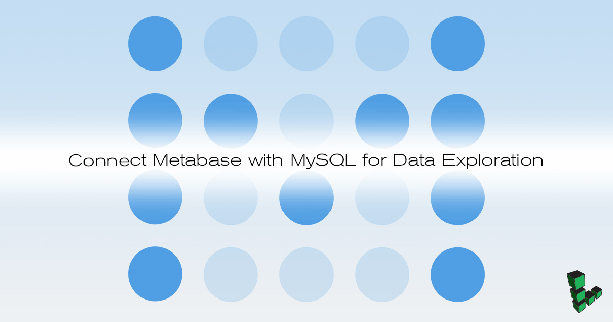
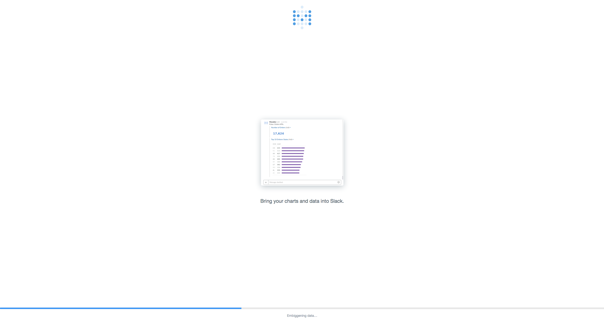
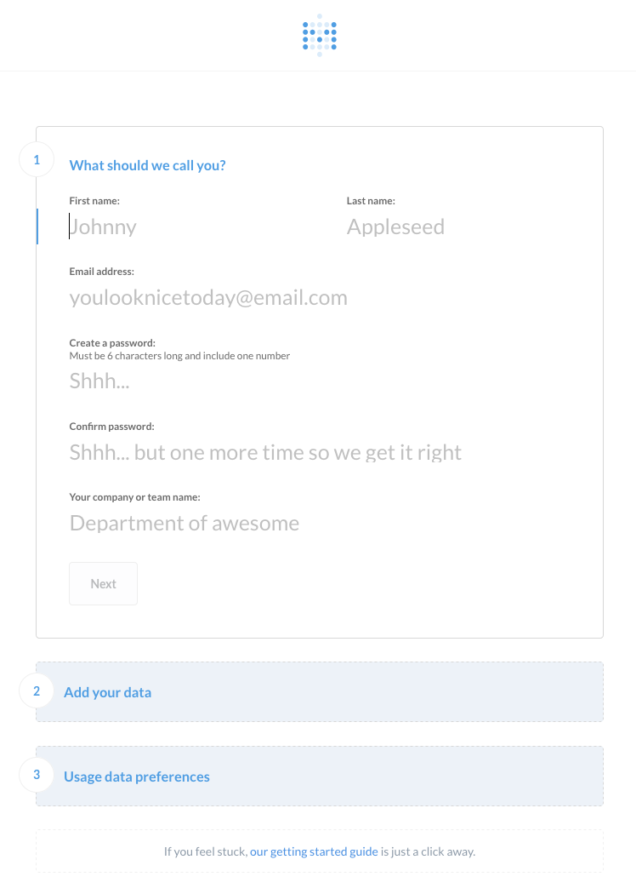
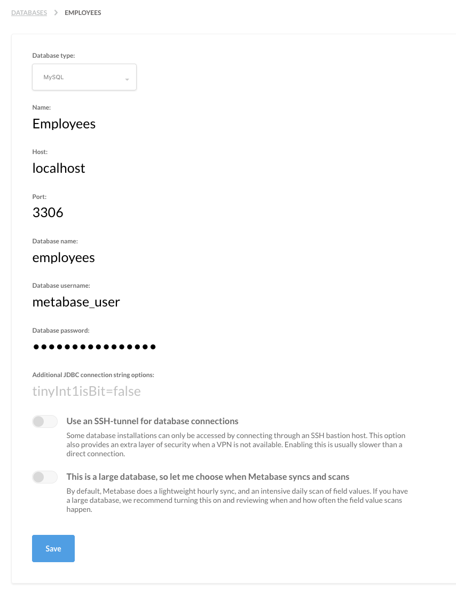
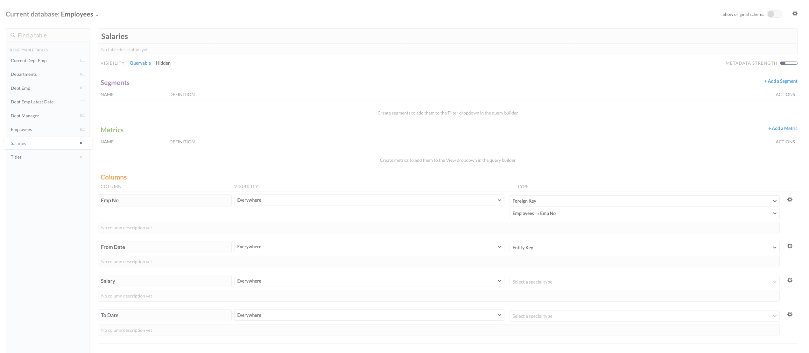
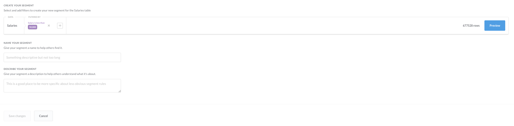
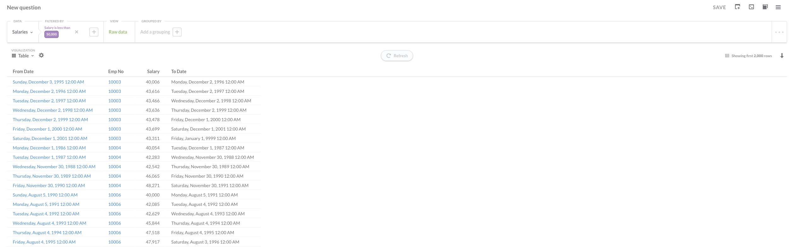

Connect Metabase with MySQL for Data Exploration
Updated by Linode Written by Sam Foo

What is Metabase
Metabase provides an interface to query data on your browser. In addition to supporting SQL querying, Metabase offers functionality to analyze data without SQL, create dashboards, and track metrics. This guide shows how to connect MySQL to Metabase then deploy on NGINX through a reverse proxy.
There are a number of additional databases that are supported from SQLite to PostgreSQL. Visualizing results become very simple through an intuitive interface. This makes Metabase versatile for sharing data even among those without an analytical background.
Install Metabase
Java Runtime Environment
The steps in this section will install the Java 8 JDK on Ubuntu 16.04. For other distributions, see the official docs.
Install
software-properties-commonto easily add new repositories:sudo apt-get install software-properties-commonAdd the Java PPA:
sudo add-apt-repository ppa:webupd8team/javaUpdate the source list:
sudo apt-get updateInstall the Java JDK 8:
sudo apt-get install oracle-java8-installer
MySQL Server
Download MySQL Server. Enter a root password when specified:
sudo apt install mysql-serverLog in as the root user:
mysql -u root -pCreate a database and user for Metabase:
CREATE DATABASE employees; CREATE USER 'metabase_user' IDENTIFIED BY 'password'; GRANT ALL PRIVILEGES ON employees.* TO 'metabase_user'; GRANT RELOAD ON *.* TO 'metabase_user'; FLUSH PRIVILEGES; quit
Download Metabase
Download the jar file from Metabase:
wget http://downloads.metabase.com/v0.28.1/metabase.jarMove the file into
/varso that it can start on reboot:sudo mv metabase.jar /var/metabase.jar
Reverse Proxy with NGINX
Install NGINX
sudo apt install nginxCreate a new NGINX configuration file with the settings below setting
server_namewith your FDQN or public IP address:- /etc/nginx/conf.d/metabase.conf
-
1 2 3 4 5 6 7 8 9 10 11 12 13 14server { listen 80; listen [::]:80; server_name _; location / { proxy_pass http://localhost:3000/; proxy_redirect http://localhost:3000/ $scheme://$host/; proxy_http_version 1.1; proxy_set_header Upgrade $http_upgrade; proxy_set_header Connection "Upgrade"; } }
Verify there are no issues with the configuration:
sudo nginx -tRestart NGINX:
sudo systemctl restart nginx
Download Example MySQL Database
The Employees Testing Database is an example database that can be loaded into MySQL. The database consists of employee and salary data with over 2.8 million entries, this size makes it useful for experimenting in a non-trivial way.
Install git:
sudo apt install gitClone the repository containing the test database:
git clone https://github.com/datacharmer/test_db.gitNavigate into the cloned repository:
cd test_dbLoad
employees.sqlinto themetabase_exampledatabase and enter the database user password when prompted:mysql -u metabase_user -p employees < employees.sqlThe console will print out the tables that are loaded as well as total time to complete.
Enter password: INFO CREATING DATABASE STRUCTURE INFO storage engine: InnoDB INFO LOADING departments INFO LOADING employees INFO LOADING dept_emp INFO LOADING dept_manager INFO LOADING titles INFO LOADING salaries data_load_time_diff 00:00:52
Environment Variables
Create a new text file containing the environment variables for Metabase:
- metabase-env
-
1 2 3 4 5 6export MB_DB_TYPE=mysql export MB_DB_DBNAME=employees export MB_DB_PORT=3306 export MB_DB_USER=metabase_user export MB_DB_PASS=password export MB_DB_HOST=localhost
Load these environment variables:
source metabase-env
Set Metabase to Start at Reboot
Check the path of your JDK binary:
which javaThis should print a path such as
/usr/bin/java.Create a systemd configuration file to ensure Metabase runs on start up.
ExecStart=should set to the JDK path from above. Be sure to replaceUserwith your Unix username:- /etc/systemd/system/metabase.service
-
1 2 3 4 5 6 7 8 9 10 11 12 13 14 15 16[Unit] Description=Metabase server After=syslog.target After=network.target[Service] User=username Type=simple [Service] ExecStart=/usr/bin/java -jar /var/metabase.jar Restart=always StandardOutput=syslog StandardError=syslog SyslogIdentifier=metabase [Install] WantedBy=multi-user.target
Apply the changes:
sudo systemctl start metabaseCheck that Metabase is active:
sudo systemctl status metabase
Firewall Rules
UFW is great for preventing unauthorized access to your database. A reasonable default is to allow port 80/443 and SSH:
sudo ufw allow http
sudo ufw allow https
sudo ufw allow ssh
sudo ufw enable
Check the firewall rules:
sudo ufw status
Metabase Interface
Metabase is now accessible on the browser on your Linode’s public IP address.
The first time you try to access, it will take some time because the MySQL database needs to migrate:

Create an account:

Enter the database information or skip this then add the information later from the Admin Panel:

From the top right drop down menu, select Admin Panel then click Data Model on the top menu.
On the left, select salaries to see information about the table, such as foreign keys and column names. Click Add a Segment:

Create a filter to view all employees with a salary greater than $50,000 (Metabase allows you to create this filter without writing SQL):

See the results:

Metabase has much more functionality you can explore. Refer to the official documentation for other use cases with Metabase.
More Information
You may wish to consult the following resources for additional information on this topic. While these are provided in the hope that they will be useful, please note that we cannot vouch for the accuracy or timeliness of externally hosted materials.
Join our Community
Find answers, ask questions, and help others.
This guide is published under a CC BY-ND 4.0 license.